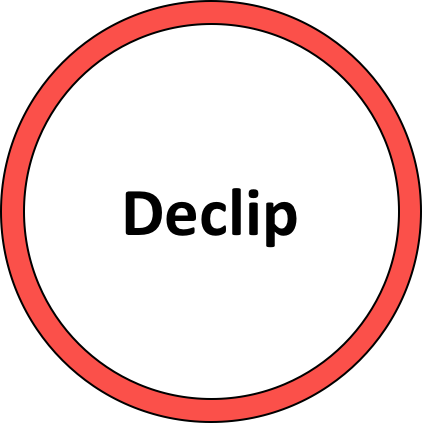
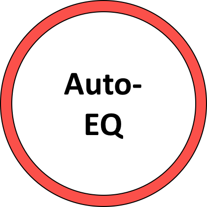

REPAIR
Clipping Example
Noisy Example
EQ Example
Input
Output
Repair!
 
Some percent of the audio file contains clipping.
Activate
To remove noise, we need to know some characteristics of the noise you wish to remove. Therefore, please select a portion of the
input
file containing only noise. The beginning or end of the audio file might be a good place to start.
Get Noise Profile
Activate
The auto-equalizer explanation goes here.
Warm
Bright
Thin
Dark
Activate
Listening Examples
Processing Audio
Progress:
<script> function Download(url) { document.getElementById('my_iframe').src = url; }; </script> </body> </html>